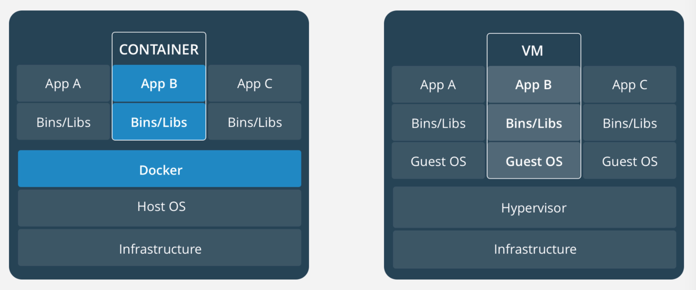

- 00 开篇词 量身定制你的持续交付体系.md.html
- 01 持续交付到底有什么价值？.md.html
- 02 影响持续交付的因素有哪些？.md.html
- 03 持续交付和DevOps是一对好基友.md.html
- 04 一切的源头，代码分支策略的选择.md.html
- 05 手把手教你依赖管理.md.html
- 06 代码回滚，你真的理解吗？.md.html
- 07 “两个披萨”团队的代码管理实际案例.md.html
- 08 测试环境要多少？从现实需求说起.md.html
- 09 测试环境要多少？从成本与效率说起.md.html
- 10 让环境自己说话，论环境自描述的重要性.md.html
- 11 “配置”是把双刃剑，带你了解各种配置方法.md.html
- 12 极限挑战，如何做到分钟级搭建环境？.md.html
- 13 容器技术真的是环境管理的救星吗？.md.html
- 14 如何做到构建的提速，再提速！.md.html
- 15 构建检测，无规矩不成方圆.md.html
- 16 构建资源的弹性伸缩.md.html
- 17 容器镜像构建的那些事儿.md.html
- 18 如何做好容器镜像的个性化及合规检查？.md.html
- 19 发布是持续交付的最后一公里.md.html
- 20 Immutable！任何变更都需要发布.md.html
- 21 发布系统一定要注意用户体验.md.html
- 22 发布系统的核心架构和功能设计.md.html
- 23 业务及系统架构对发布的影响.md.html
- 24 如何利用监控保障发布质量？.md.html
- 25 代码静态检查实践.md.html
- 26 越来越重要的破坏性测试.md.html
- 27 利用Mock与回放技术助力自动化回归.md.html
- 28 持续交付为什么要平台化设计？.md.html
- 29 计算资源也是交付的内容.md.html
- 30 持续交付中有哪些宝贵数据？.md.html
- 31 了解移动App的持续交付生命周期.md.html
- 32 细谈移动APP的交付流水线（pipeline）.md.html
- 33 进阶，如何进一步提升移动APP的交付效率？.md.html
- 34 快速构建持续交付系统（一）：需求分析.md.html
- 35 快速构建持续交付系统（二）：GitLab 解决代码管理问题.md.html
- 36 快速构建持续交付系统（三）：Jenkins 解决集成打包问题.md.html
- 37 快速构建持续交付系统（四）：Ansible 解决自动部署问题.md.html
- 持续交付专栏特别放送 答疑解惑.md.html
- 持续交付专栏特别放送 高效学习指南.md.html
- 结束语 越痛苦的事，越要经常做.md.html
- 捐赠
13 容器技术真的是环境管理的救星吗？
在上一篇文章中，我分享了基于虚拟机打造自动化流水线中的一些常见问题和原则。随着计算机技术的发展，交付方式也在不断地演进和变更。而基于虚拟机的交付方式，正在被基于容器的交付方式所替代。
今天，如果你在一个较大的科技公司，你必定会遇到的如下的场景：
多个技术栈；
多个不同类型的应用；
不同的开发环境和运行环境。
因此，你所面对的交付场景也会变得越来越复杂，带来的挑战也会越来越大。
此外，敏捷研发的流行，使得低成本、高效率的解决研发问题的方式成为主流，因此复杂的交付的场景，显然就会成为拖油瓶。
加之，传统交付方法，已经很难满足这样快速迭代的交付需求，服务交付方式、快速部署、环境隔离、环境一致性等诸多问题亟待解决。
因此，在过去很长一段时间内，持续交付本身也陷入一个发展瓶颈。各规模的团队、企业都承认持续交付是一个好方案，但却都不敢试。其实，主要原因还是，持续交付在技术上没有得到突破性的发展。
但是，容器的出现和兴起，为微服务、CI/CD、DevOps 带来了新的可能性，使得持续交付又有了向前发展的动力，同时也带来了新的挑战。
那么，容器的出现到底为持续交付带来了哪些契机和挑战呢？我在这篇文章中，将和你讨论：为什么说容器是持续交付最重要的利器之一，是环境管理的将来式，这个问题，助你借助容器构建自己的持续交付体系。
什么是容器
在传统模式下的开发到部署流程是这样的：
在本地电脑上安装开发应用所需要的库文件、扩展包、开发工具和开发框架，完成开发工作；
本地开发完成后，将开发好的应用部署到测试环境进行测试；
一切就绪后，再把应用部署到生产环境。
但问题是，你该如何保证开发、测试和生产这三套环境，甚至更多套环境是完全一致的呢？再有就是，环境的变更问题，虽说“百分之九十九的故障是由变更导致的”是一句废话，但也是一句实话，你又该如何确保每套环境的变更是一致的呢？
而容器的出现，似乎解决了这些问题。
正如 Docker 官网解释的：
容器镜像是软件的一个轻量的、独立的、可执行的包，包括了执行它所需要的所有内容：代码、运行环境、系统工具、系统库、设置。
这代表着，一旦一个应用被封装成容器，那么它所依赖的下层环境就不再重要了。
那么，容器和虚拟机到底有什么区别呢？

引自https://www.docker.com/what-container
容器是一个在App层的抽象，整合了运行的应用软件代码以及它的依赖、环境。许多个这样的容器可以运行在同一台宿主机上，并与其他容器共享这台宿主机的系统内核。而且，每一个容器实例，都运行在自己独立的进程中，与其他实例隔离。
虚拟机是一种将一台服务器转变成多台服务器的物理硬件设备的抽象。Hypervisor软件是虚拟机的主要部分，它使得一台物理设备上可以运行多个虚拟机。
每个虚拟机都是一个完整操作系统的拷贝，再搭建一层 runtime，最后供应用程序运行。通常一个虚拟机大小都要超过10 GB。
容器和虚拟机的主要差异，包括三个方面：
- 首先，多个容器可以共享同一个宿主机的内核，所以容器的体积要比虚拟机小很多，这就使得容器在分发和存储上比较有优势；
- 其次，启动容器不需要启动整个操作系统，所以容器部署和启动速度更快、开销更小，也更容易迁移，这使得容器拥有更强的恢复能力；
- 最后，容器连带代码和环境一起部署的方式，保证了它所包含的程序的运行依赖不会被变更，这就使得容器有效解决了不同环境不同结果的问题。
了解了容器的基本概念，我接下来跟你说说，容器可以对持续交付产生什么影响。
重新定义交付标准
没有容器之前，交付标准包括软件环境（也就所谓的机器）和软件代码两部分。交付系统更关注的是软件代码，环境一旦产生后，我们就不再关心或者很难再干预用户后期是如何对其做变更的了。
也就是说，环境的变更没有版本，没有记录，甚至当事人也会忘记当时变更了什么， 不言而喻，这会带来很多未知的安全隐患。
而，容器技术统一了软件环境和软件代码，交付产物中既包括了软件环境，又包括了软件代码。也就是说，容器帮我们重新定义了交付标准。
那么，容器技术到底是如何做到的呢？被重新定义后的交付，又有哪些特点呢？
第一，交付结果一致
容器镜像可以把软件的运行环境以及代码打包在一起，因此可以基于同一个镜像，在不同的地方生成一模一样的运行环境，也就是说单个镜像的交付结果不可变。
当然，单个容器只能提供一个服务，而实际场景下，应用都是跑在SOA或微服务的框架下的。所以，还需要利用如 Mesos 或 Kubernetes 这样的编排系统，将多个容器组织起来，并固化编排过程。
基于这两个特性，一旦形成了固定的容器镜像和对应的编排（也成为应用模板），那在不同的环境下，一定可以重复部署，且部署结果保持一致。
第二，交付自动化
容器镜像及容器编排技术很好地解决了CI和CD问题：
- CI方面，与传统方式的不同只在于，原先交付的是安装包或软件包，而容器交付的则是镜像；
- CD方面，与传统方式相比则有了长足的进步。- 对传统方式而言，部署和安装方式与软件类型、开发方式有直接关系，存在多种多样的可能。- 而容器技术则没有这样的问题，唯一的方式就是拉起容器镜像。这就大大简化了部署的复杂度，而且在编排系统的支持下，完成CD越来越容易了。
第三，交付个性化
传统的交付模式，往往因为环境的初始化问题，只能完成有限种类的交付。运维部门很难为所有的应用做出统一的环境模板，比如需要哪些软件依赖、需要哪些系统配置、部署的步骤是怎样的等等，要统一这些模板，就需要协调多个部门共同完成，难度可想而知。
对于一些受众比较少的程序语言，或者一个仅仅想部署一套开源软件的需求是很难满足的，大多数情况下，需要用户自己去申请虚拟机，然后按照官方提供的文档一步一步安装环境。这样操作，非常麻烦，更别提后续的更新了。
但是，有了容器之后，我们可以使用统一的接口完成任何应用的部署，几乎可以很好地满足所有的个性化需求。
第四，交付版本控制
对于容器来说，遵循的是不可变基础设施（Immutable Infrastructure）的理念，也就是说任何变化，包括代码、环境、配置的变更，都需要重新制作镜像，产生一个新的版本。这与版本往往只和代码变更有关的传统方式有所不同。
那么，这样的变化到底是好是坏呢？
变还是不变，这是个问题
不可变基础设施（Immutable Infrastructure），是 Chad Fowler 在2013年提出的一个很有前瞻性的构想：
在这种模式中，任何基础设施的实例（包括服务器、容器等各种软硬件）一旦创建之后便成为一种只读状态，不可对其进行任何更改。如果需要修改或升级某些实例，唯一的方式就是创建一批新的实例来替换它。
这种思想与不可变对象的概念完全相同。
而容器相比于虚拟机体积小和启动快的优势，正好符合了不可变基础设施这一模式的核心思想。
不可变基础设施模式的好处显而易见，主要包括以下三个方面：
很多与runtime相关的配置工作都可以被简化，这让持续集成与持续部署过程变得更流畅。
它也更易于应对部署环境间的差异及版本，进行更有效、全面的管理。
对回滚来说，更是得到了充分的保证，只要原先版本的镜像存在，它就一定能被恢复。
虽然不可变基础设施模式能够带来非常多的好处，但是其实现的难度也很高，你需要一套完全不同的版本管理系统，纳入所有的变更，重新定义版本、变更和发布。如何做到这些，我会在后续的文章中为你详细介绍。
但是，这种模式在我看来也是略微违反人性的（人们往往是想怎么简单怎么来）。试想如果你仅有一台机器，只是想升级一下 cURL 的版本，你觉得是直接在容器里更新方便，还是更改 Dockerfile 重打镜像走完一整套发布流程更方便呢？
容器不是银弹
正如上面所说，不可变基础设施模式对运维人员来说绝对是福音，为企业实现持续交付保驾护航。但是，对普通用户来说，这种模式有时候却是一种折磨，不可能有完美的标准化容纳所有的个性化，我们必须为个性化需求做准备。
目前，很多业务开发人员的观念还停留在使用虚拟机的阶段，从虚拟机迁移到容器时，我们也是拼了命地把容器的使用体验向虚拟机靠近，尽量让用户感觉就是在用虚拟机。
初衷是好的，但是这种做法却不能让用户真正认识并理解容器。
在迁移前期，我们经常会遇到这样的案例：由于个别应用对环境的个性化需求，用户需要登录虚拟机安装一些软件，或者更新一些配置。迁到容器后，他们依然这么做，但是结果让他们失望，因为每次应用部署后，之前的环境变更就都消失了。这无疑让他们非常沮丧，就好比写了几个小时的代码忘记了保存。
我们虔诚地遵循了不可变基础设施模式，但是又没有很好地告知用户这一原则。因此，我们不得不提供各种各样的方式让用户完成 “不可变中的可变” 与 “标准化中的个性化”，甚至我们必须在不同的环境使用不同的镜像。
而这，与我们认为的容器交付的理想状态是有差距的。虽然如此，但如何达成这样的目的，我也会在之后的文章中为你具体介绍。
总结
在这篇文章中，我介绍了容器如何代替虚拟机帮助我们应对持续交付的新挑战，但也阐述了使用容器技术实施持续交付的一些不足。
首先，容器是一种轻量级、可移植、自包含的软件打包技术，使应用程序几乎可以在任何地方以相同的方式运行。
然后，我分别从交付结果一致、交付自动化、交付个性化和交付版本控制这4个方面重新定义了基于容器的交付标准。
最后，我又从变和不变两个方向，阐述了容器能解决一些已有的问题，但它并不是银弹，它同样会带来问题，而这些问题，则需要改造和重新设计既有的持续交付模式来解决。
思考题
你所在的公司是否已经容器化了？如果已经容器化了，是如何平衡应用标准化与个性化的？对于有状态应用，又该如何使用容器进行交付呢？
欢迎你给我留言。
© 2019 - 2023 Liangliang Lee. Powered by gin and hexo-theme-book.